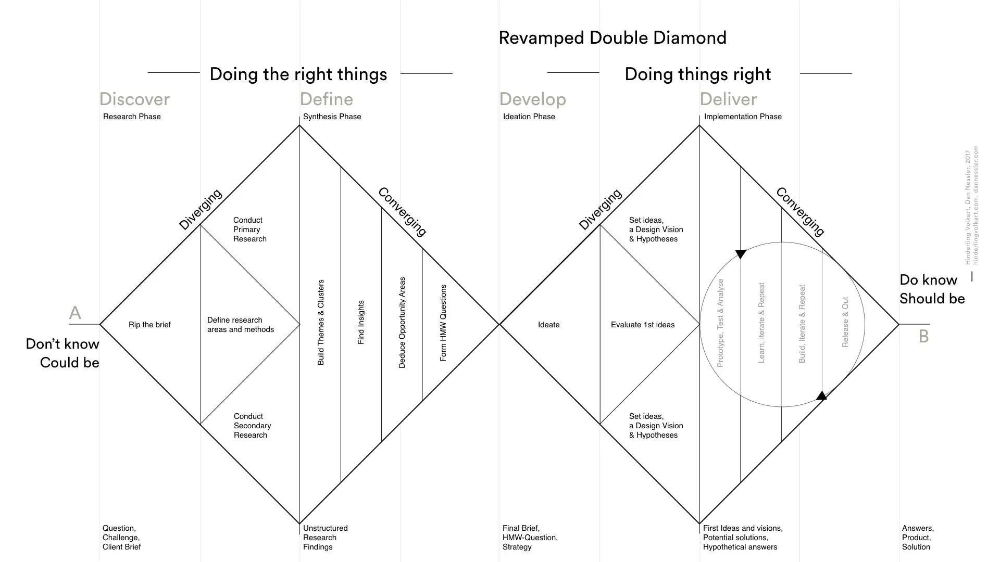

HCI Researcher & UX Strategist
I bridge the gap between people and technology through empathetic research, inclusive design, and a belief that every interaction is an opportunity to make someone's life a little better.
Click anywhere to create empathy ripples
My Approach

Taken from Dan Nessler's Revamped Double Diamond
Selected Projects
HCI Research · User-centered food waste reduction app
A human-centered design project exploring household food management solutions through iterative design stages: from user research to mid-fidelity prototyping.
Role: Lead Researcher & Qualitative Data Analyst · Duration: 3 months · Team: 5 members
View Case Study →Video Game Programming · Custom C++/OpenGL engine
A top-down action/strategy game built with a custom C++/OpenGL engine. Captain a modular ship, rescue bunnies, and battle pirate chickens in a handcrafted 2D world.
View Project →Software Development · Java Swing RPG with MVC architecture
A Pokemon RPG built with Java Swing, demonstrating MVC architecture and OOP design patterns. Digitizing a childhood notebook game from boarding school into a full desktop application.
View Project →Machine Learning · Real-time webcam ASL validation
A highly structured, interactive educational tool bridging web development and computer vision built in 36 hours. Uses MediaPipe and Keras to provide real-time webcam feedback for learning American Sign Language.
View Project →Let's Connect
…creativity is the habit of continually doing things in new ways to make a positive difference to our life.